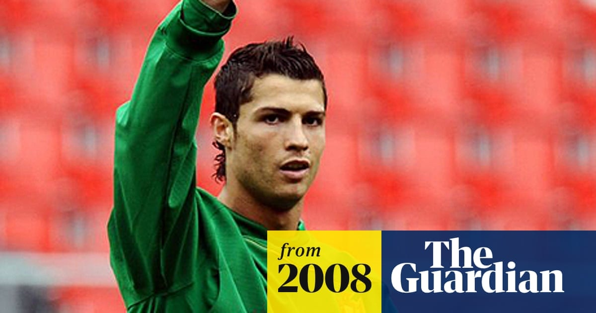

First Exit Storm — Ferguson's 'Keep Him, Sell Rooney' Call
Post-World-Cup exit thoughts: According to SPORTbible and others, after the 2006 World Cup in Germany, Ronaldo had already 'agreed to leave United'. Wink-gate had made him public enemy in England, Old Trafford's atmosphere deteriorated sharply, and he desperately wanted to join Real Madrid, who had long courted him.
Real's flirtation: Under Florentino Pérez's presidency, Madrid had long made eyes at Ronaldo, constantly teasing through media leaks and back-channel contact. This 'Galáctico' style of poaching had Ronaldo's head already out of Manchester, and United's hold on him weakening.
Ferguson forces him to stay: At the crucial moment Sir Alex Ferguson personally intervened, sitting down for a heart-to-heart with Ronaldo. With a 'stay one more year and it'll pay off' promise, plus a mix of emotional appeal and authoritative pressure, the boss single-handedly parked the transfer.
'At least one more year': BBC at the time recorded Ronaldo's public line — 'I'll stay at United for at least one more year'. The line was the product of a tug-of-war between the manager's authority and the player's wishes — also a classic case of Ferguson's man-management.
The peak that staying produced: Forced to stay, Ronaldo exploded in the 2007-08 season, leading United to a Premier League + Champions League double and winning his first Ballon d'Or. But this 'forced greatness' also laid a deeper fuse for his eventual 2009 exit.
The start of the soap opera: The 2006 storm kicked off the multi-year 'Ronaldo to Real' serial. Every summer produced another round of exit rumours; the traffic feast jointly orchestrated by club, player and media exhausted United fans — early evidence of Ronaldo's 'body at United, heart elsewhere'.
Verdict: Cristiano's first exit storm ended with Ferguson digging in and keeping him. That season marked the turning point that propelled Cristiano to his first Ballon d'Or and definitive stardom.